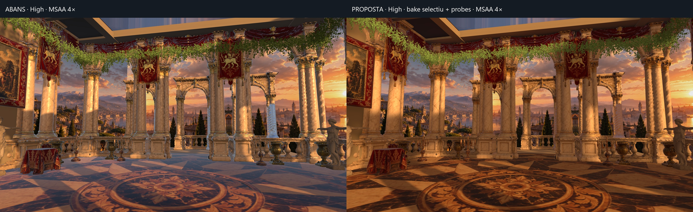
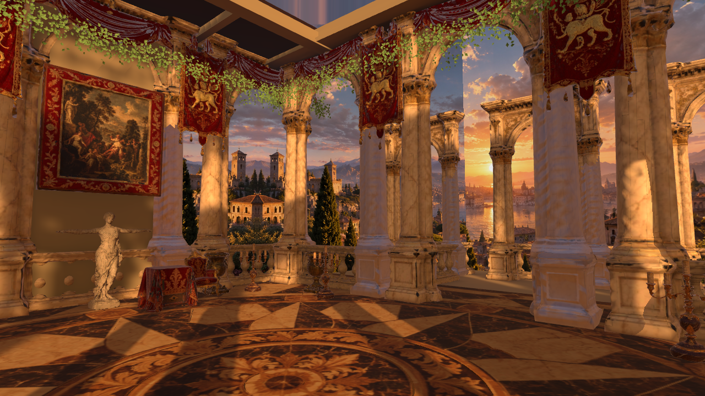
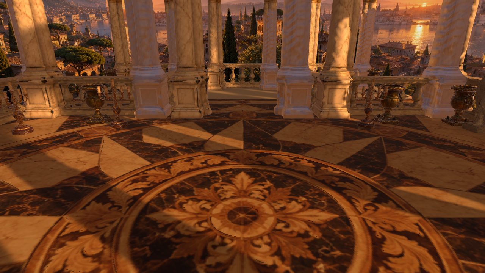
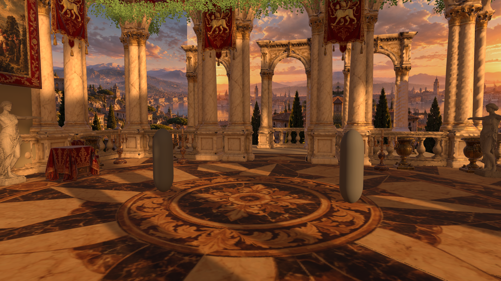
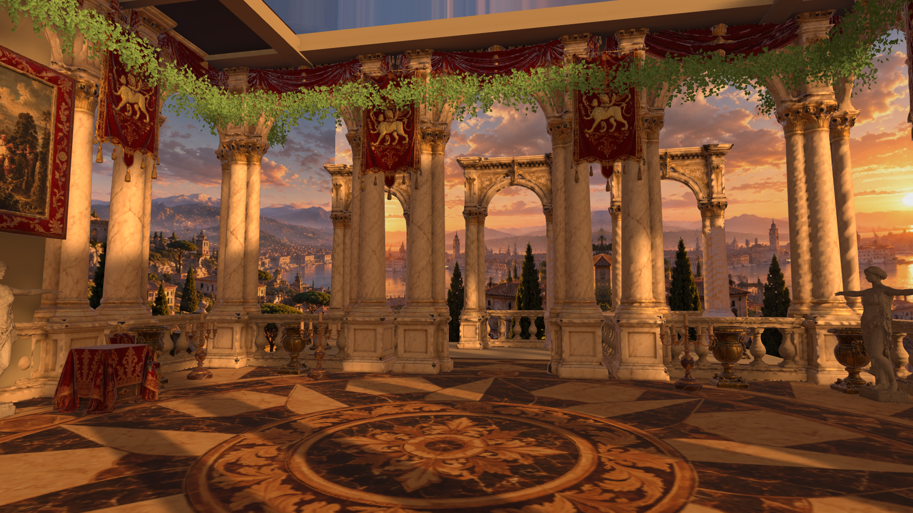

Monteverdi 01
Llums més suaus. Contorns més nets.
Pilot amb bake selectiu, 255 light probes i reflexió precalculada. Les captures són renders reals de Unity, mantenint la distribució original de l'escena.
Abans / proposta · mateixa geometria Mid
Arrossega el control: abans a l'esquerra, proposta a la dreta.
Abans: escala 0,85 sense MSAA. Proposta: escala 1 amb MSAA 4×. Canvien també la llum i els materials.Comparació en moviment
Recorregut muntat amb captures. La velocitat de reproducció no indica FPS del joc.
High · abans i després

Altres angles de la proposta




Què recomano
Bake híbrid i cubemap precalculat. MSAA 4× per qualitat visual; 2× com a alternativa a provar en mòbils limitats. El terra reutilitza les seves UV en una sola malla compartida: uns 17 KiB addicionals de memòria de malles. Els ornaments conserven les malles originals.
Hi ha dues lightmaps, amb uns 727 KiB de textures de color mesurats en aquest ordinador. La prova conserva una llum en temps real. La geometria continua sent considerable: 704.404 triangles Mid; 2.041.199 High, sumant les malles auditades.
Encara falta mesurar FPS i consum al mòbil. Les captures en RTX 3070 no demostren rendiment en un telèfon.
Informe complet, UV, mesures i instruccions per obrir el pilot
Escenes de prova: Assets/_Project/Scenes/Debug/MonteverdiLighting_Mid_Recommended.unity i MonteverdiLighting_High_Recommended.unity. Obre-les i prem Play per veure el perfil aplicat.